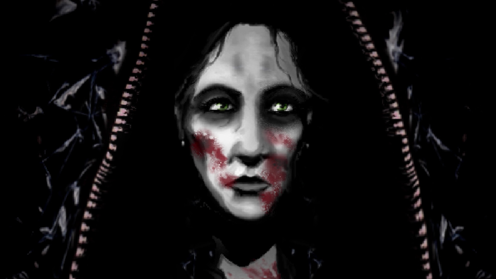
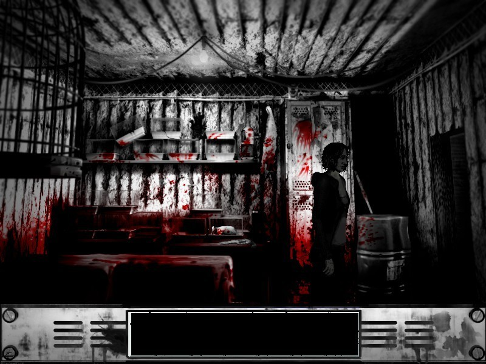
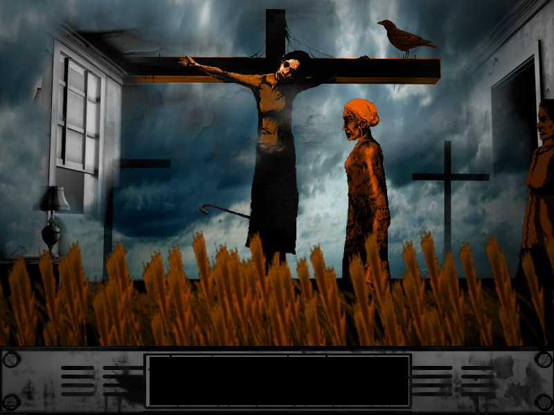

The Cat Lady holds a special place in my heart, my first photoshop project for ART 74 was visually inspired by Harvester Games art style. You follow Susan, the protagonist's, journey of immortality that she was granted after commiting suicide as she was given the new job of ridding the world of five dangerous psychopaths. This 2012 adventure horror game's gritty, black and white visuals that isn't afraid to splash vivid red onto the screen when it needs to, adds onto the horror. In comparison the rest of the games on this website, this game tackles more mature themes; in fact, this game is the second of it's trilogy, along with "Downfall" and "Lorelai", that focuses on the topic of death, suicide, sexual assault, and mental health.
  